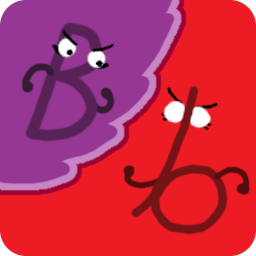

Battlebot
Survive to the end!
Battlebot is a Discord bot based on based on Tank Turn Tactics.
2-25 players
RULES
- All players start at a random location on the grid, and have 3 hearts and 1 action point (AP).
- At a set interval, everyone will receive 1 AP.
- At any time you like, you can spend AP to perform any of the following actions:
- MOVE to an adjacent, unoccupied square (1 AP).
- SHOOT someone who is within your range (1 AP). Shooting someone removes 1 heart from their health.
- HEAL for one heart (3 AP). There is no limit to your hearts.
- UPGRADE your range (3 AP), up to 20.
- GIFT a heart or action point to anyone within range (1 HP or 1 AP). This transfers one of your hearts or AP to the other player.
- PUSH another player within your range in any direction (1 AP).
- At the start of the game, everyone has a range of 2. That is, they can SHOOT at or GIFT to anyone within 2 squares of them. Upgrading your shooting range increases this by 1 square each time.
- If a player is reduced to 0 hearts, then they are dead. Any action points the dead player had are transferred to the player who killed them. Dead players remain on the board and not removed.
- Dead players form a jury. Each day they vote on a player, and when AP is distributed, players get 1 extra AP for every 3 votes they get from the jury.
- Gifting a heart to a dead player revives them.
- If you gift your last heart to someone, you will die, but your leftover AP will stay on your body, and will be usable if you are revived later.
ADDITIONAL NOTES
- Action points are secret! Probably a good idea to try and hide how many you have.
- You can't win this game without making some friends and stabbing some backs. Probably.
INSTRUCTIONS
STARTING A GAME
Add the bot to your server and use /new to create a game.
Everyone who wants to play should then click Join on the message that gets created.
After everyone who wants to play has joined, a moderator should click the Start button in the same thread.
PLAYING
Use /c from within the control channel to access all controls for the game as an alive player.
PLAYING AS THE JURY
If you're dead, use /vote from within the control channel to set your vote.
You can also use /vote as a living player, in case you die while offline.
ADDITIONAL COMMANDS
/ap tells you how much AP is on your body.
/nextap tells you when the next AP will be distributed.
/list lists the alive players, their location, and their status.
/finish (admin only) ends the game, with anyone left alive tying for the win.
/help links here.
/board sends an image of the current board to you.
/sendboard sends an image of the current board to the channel.
/showrange sends an image of what you'd see in your controls to the channel.